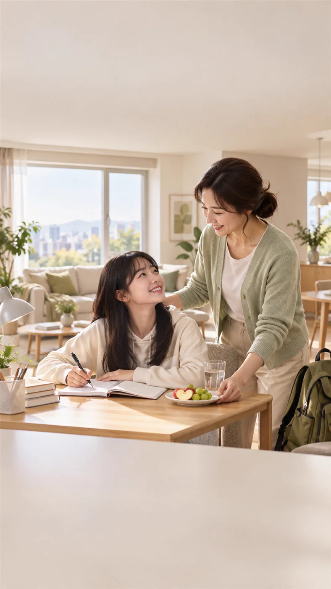
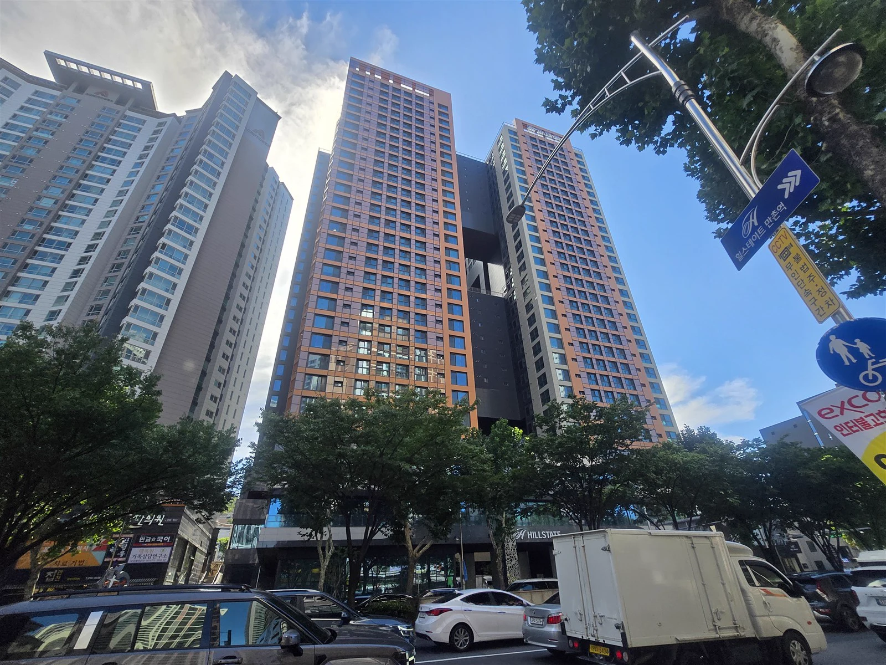
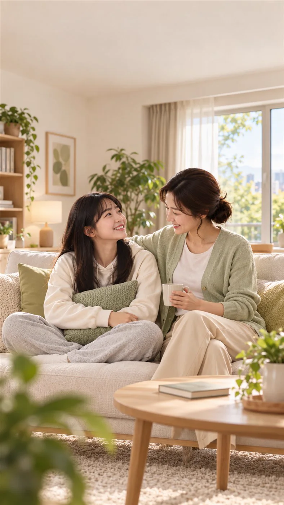
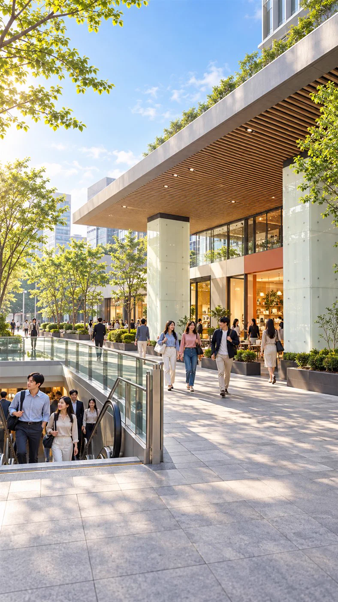
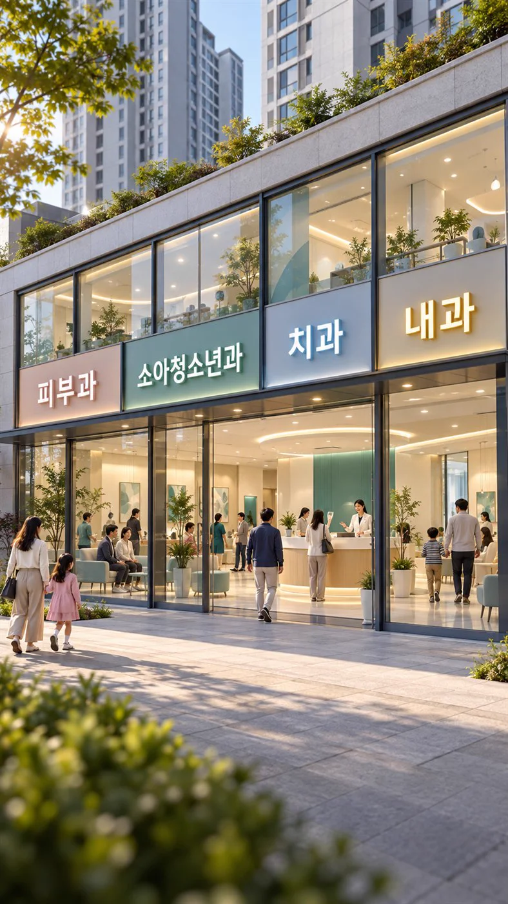
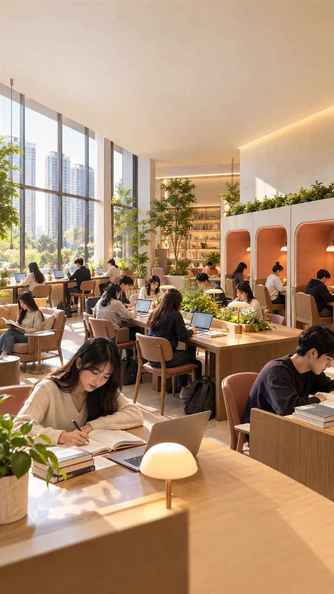
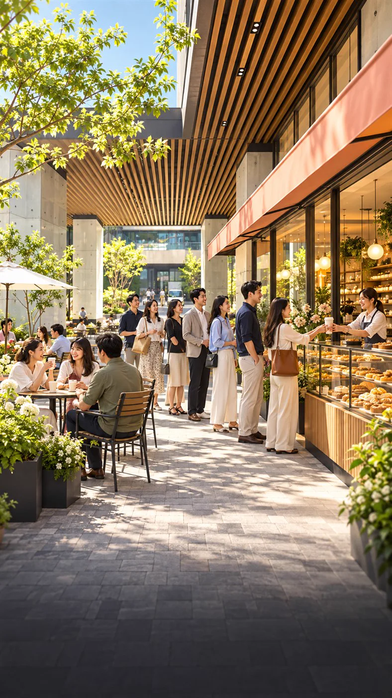

AI 주거 연출함께하는 하루
가족의 시간이 머무는 집.
소중한 일상을 넉넉하게 그려보세요.

RESIDENCE / 오피스텔
함께 웃는 시간부터 하루 끝의 휴식까지.
만촌에서 그려보는 우리 가족의 일상입니다.

AI 주거 연출가족의 시간이 머무는 집.
소중한 일상을 넉넉하게 그려보세요.
범어·만촌 교육 생활권.
학원 수업의 모습을 AI로 표현했습니다.

AI 주거 연출전용 84㎡ 주거 공간.
평면과 실제 호실을 직접 확인하세요.
이미지는 홍보영상에 사용한 AI 연출입니다. 실제 실내 사양·시설·입점 현황과 다를 수 있으며 학교 배정 등을 보장하지 않습니다.
밝은 일상과 따뜻한 휴식을 담은 오피스텔 영상
HILLS AVENUE / 단지 내 상가
역세권의 연결, 단지 안의 생활.
다양한 업종의 가능성을 이미지로 만나보세요.

AI 입지 연출
AI 입점 가정일상의 진료를 상상하다
배움의 활기를 더하다

AI 입점 가정집중하는 일상을 그리다

AI 입점 가정머무는 즐거움을 담다
병원·학원·스터디카페·카페는 실제 입점 현황이 아닌 AI 입점 가정입니다. 고객 수·매출·수요를 보장하지 않습니다. 420실은 단지 규모이며 현재 입주자 수 또는 잔여 물량이 아닙니다.
EVERYDAY, CONNECTED
배우고, 이동하고, 돌보고, 즐기는 시간.
주변 생활환경을 네 가지 키워드로 살펴보세요.
범어·만촌 학원가 등
주변 교육 생활권
도시철도 2호선 만촌역과
달구벌대로의 연결
범어·만촌 일대의
병·의원 생활권
주변 카페와 외식 상권,
가까운 일상의 선택지
시설별 위치·운영 여부·이동 동선은 방문 전에 확인해 주세요. 생활환경 소개는 특정 시설 이용이나 입점을 보장하지 않습니다.
YOUR NEXT STEP
대구광역시 수성구 달구벌대로 2562
힐스테이트 만촌 엘퍼스트 · 힐스 에비뉴 만촌 엘퍼스트
상담 연락처와 접수 기능은 준비 중입니다.
현재 홈페이지에서는 개인정보를 수집하지 않습니다.